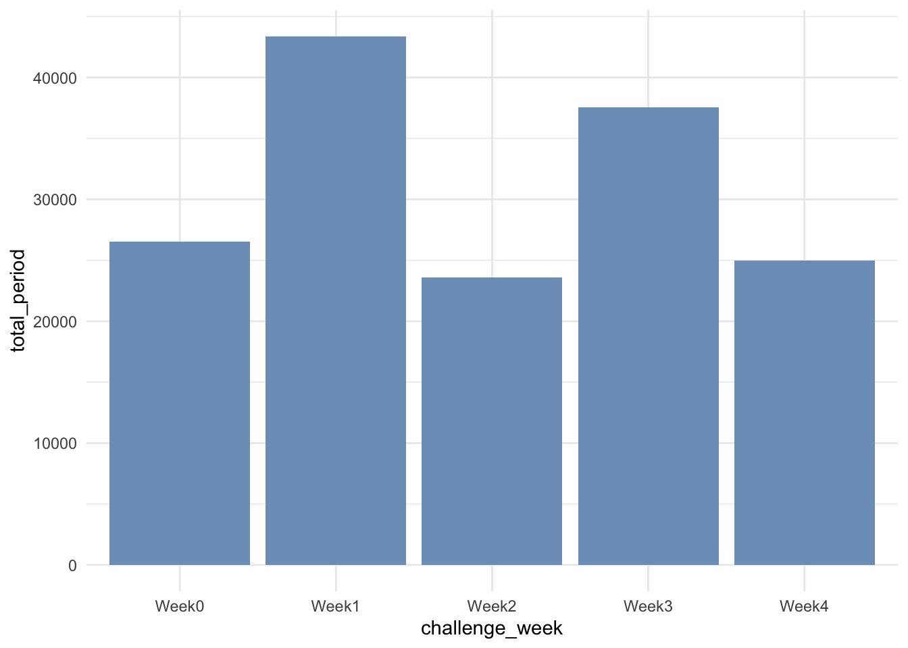
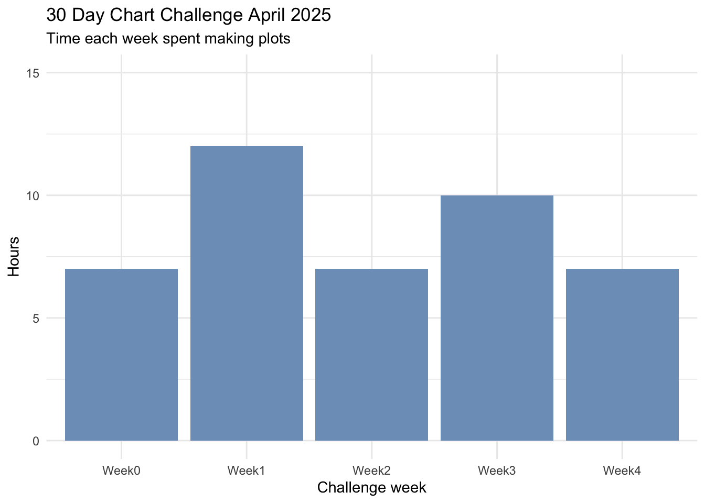

The last day of the #30DayChartChallenge- woot! As predicted I did not manage to make a chart every day; the latter half of the challenge clashed with school holidays and a trip away, but 19/30 days is not too bad.
I initially planned to focus on Our World in Data charts and that worked well initially, but it became more difficult to find prompt-relevant data there as the challenge went on. Once I let myself look more broadly, I had a lot of fun to making plots about everything from egg prices to hollywood star age differences to measles vax rates and Puteketeke controversies.
For the last of the challenge I wanted to look at my own data about how much time I spent on the challenge in April. I pulled data from my Timing app and learned some useful things about working with date and time data in the process.
Here I am reading my timing data in to RStudio and miraculously R is recognising my dates as dates and time values as time- that should make things easier right?
get the data
library(tidyverse) # tidyverse now includes the `lubridate` packagelibrary(here)library(gt)library(plotly)library(ggeasy)library(Manu)chart_time <-read_csv(here("charts/2025-04-30_natgeo/chart_time.csv"))glimpse(chart_time)
If you are less lucky and your dates have read in as characters, you can make them into dates using functions from the lubridate package. If you have 2025-04-01 format dates, df$date <- ymd(df$date), tells R that your date variable is a date in year-month-day format.
I am interested in how much time I spent during each week of the challenge, so here make a new variable using case_when() and the day and month values, to make another variable with challenge week values Week0 to Week4.
chart_time <- chart_time %>%mutate(day =day(date)) %>%mutate(month =month(date)) %>%mutate(challenge_week =case_when(month ==3~"Week0", day %in%1:7~"Week1", day %in%8:14~"Week2", day %in%15:21~"Week3", day %in%22:30~"Week4"))glimpse(chart_time)
How much time did I spent across the month? Here I am summing all time values in the dataset. I was initially surprised to find that when you sum a variable in time format, the output is in seconds (156000 seconds!). It took me a little time to work out how to convert those values into meaningful units.
Initially I tried dividing by 60 a couple of times to get minutes and hours but the values were still seconds (turns out that only works when the data is numeric). A bit of lubridate googling and I found that you can use the seconds_to_period() function will reformat values so that they display as hours, minutes, and seconds.
# total time spentsum_total <- chart_time %>%summarise(total_seconds =sum(time)) %>%mutate(total_period =seconds_to_period(total_seconds))gt::gt(sum_total)
total_seconds
total_period
156000
1d 19H 20M 0S
week
How many hours did I spend each week? On average about 8 hours per week, a few more than that in the first week when I did 7 charts in 7 days, and the week before we headed away during the school holidays so that I could schedule some posts in advance.
# time per weekweek_total <- chart_time %>%group_by(challenge_week) %>%summarise(total_seconds =sum(time)) %>%mutate(total_period =seconds_to_period(total_seconds)) gt::gt(week_total)
challenge_week
total_seconds
total_period
Week0
26520
7H 22M 0S
Week1
43380
12H 3M 0S
Week2
23580
6H 33M 0S
Week3
37560
10H 26M 0S
Week4
24960
6H 56M 0S
plot
week
Expressing the time as a “period” displays nicely when put in a gt() table as above, but when I tried plotting the same data, the y axis is STILL seconds.
week_total %>%ggplot(aes(x = challenge_week, y = total_period)) +geom_col(fill ="#7d9fc2") +theme_minimal()

My first instinct was to use the hours() function to pull the hours out of the total period variable, but that was unsuccessful.
week_total %>%ggplot(aes(x = challenge_week, y =hours(total_period))) +geom_col(fill ="#7d9fc2") +theme_minimal()
So I went back to basics and turned the time period back to numeric and worked out the minutes and hours by dividing by 60.
week_total %>%ggplot(aes(x = challenge_week, y = total_hours)) +geom_col(fill ="#7d9fc2") +theme_minimal() +labs(x ="Challenge week", y ="Hours", title ="30 Day Chart Challenge April 2025", subtitle ="Time each week spent making plots") +theme_minimal() +scale_y_continuous(limits =c(0,15))

day
p <- chart_time %>%ggplot(aes(x = date, y = time, colour = challenge_week)) +geom_point() +geom_line() +theme_minimal() +scale_colour_manual(values =get_pal("Kereru")) +labs(x ="Date", y ="Hours", title ="30 Day Chart Challenge April 2025", subtitle ="Daily time spent making plots") +scale_y_time(labels =c(0,1,2,3)) +easy_remove_legend_title()p